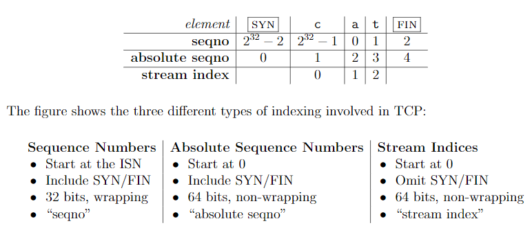

CS144 lab 记录过程。
环境配置
本课程所有 lab 均需要在 Linux 环境下运行，课程组提供了 4
种运行方式，直接照着 Instructions
来就好了。我这里因为实验室自带 Ubuntu
工作站，所以用了第三种方式，按照清单一个个
sudo apt-get install 下来就完事了。
lab0 Networking Warmup
之前有用 http 访问某网站并获取文本、用 smtp 发邮件的一些小操作，跟着走一遍基本没啥问题，就是熟悉一下基本的命令。现在要真正上手敲 C++ 了。
准备工作
首先是把代码拉下来，我先在自己的 github 下新建了一个仓库，命名为
CS144，为了尊重课程协议，我设为了
private。拉代码就直接
git clone --bare https://github.com/CS144/sponge.git，后面所有的
lab 都是在这一套文件下实现的。
随后，执行
1 | $ cd your_repository_name |
此时课程代码及其所有分支已经移植到我们自己的仓库里了，接着
cd .. && rm -rf sponge
将课程仓库删除，最后把我们自己的仓库拉下来即可。
1 | # If you pull / push over HTTPS |
可以输入 git remote -v
查看本地与远程是否对应。ok，现在可以将所有更改 push
到自己的代码仓库里了。
coding
课程 lab 代码仓库一共有 8 个分支，每个 lab 前都需要
git merge lab?-startercode来合并分支。
执行如下命令构建项目
1 | $ mkdir build |
我们的代码要写在 /apps/webget.cc 里的
Your code here 处。写之前要认真看看
socket.hh，address.hh，file_descriptor.hh
这三个头文件，尽管本 lab 要用到的类只有 TCPSocket 和
Address 这俩。
Address 类决定了连接的目标 host 以及协议类型，这里应为
Address(host, "http")。
TCPSocket 提供了 write(string)
方法，等效于在 terminal 输入相应的命令；read()
方法则返回获取到的字节流；eof()
方法判断是否抵达字节流末尾。
注意，每一行末尾都要加上
'\r\n'，最后的Connection: close后要加两个这玩意。注意，请用 while(!socket.eof()) 来循环读字节流，而非 single call to read。
写完代码后，可以执行如下命令来检查输出结果：
1 | $ cd build |
如果看到结果如下，则输出正确。
1 | HTTP/1.1 200 OK |
最后用课程组给的测试代码进行跑分:
1 | $ cd build |
看到如下输出，则通过。
1 | [100%] Testing webget... |
An in-memory reliable byte stream
lab0 的最后一个任务是实现一个处理字节流的有限容量 buffer，writer
负责将字节流写入 buffer 中，reader 从中读取。文件位于
libsponge/byte_stream.cc 以及
libsponge/byte_stream.hh。
writer 的工作很简单，写数据(write)、终止写入(end_input)以及获取
buffer
剩余容量(remaining_capacity)，需要注意的是如果写入的数据大小超过了剩余容量，则应尽可能写入，比如剩余容量
3 的情况下要写 "abcdefg"，则只写入 "abc"。
reader 有三种输出方式，只读(peek_output)，只写(pop_output)以及读写(read_output)，注意后两种方法都意味着增加已读取的字节数。
以及一些通用的接口，这些接口的实现需要我们额外添加一些 private
成员变量，不再赘述。这里课程组已经为我们提供了一个名为
BufferList 的数据结构
执行以下命令进行测试：
1 | $ cd build |
测试结果如下。
1 | [100%] Testing Lab 0... |
lab1 Stream Reassembler
本 lab 要求在 lab0 的基础上实现一个字节流整合器。

lab1 ~ lab4 均围绕此图进行。在 lab0
中，我们实现了有序字节流，而事实上真实的网络并不会按顺序向我们发送数据包，我们需要利用一个整合器将收到的无序字节流片段以正确顺序拼接并写到
ByteStream 中。数据包以 {data, index}
的形式被接收，其中 data 为
std::string，index 为 data
作为子串在原始字节流中的下标，如
1 | 1 2 |
一旦整合器收到了正确的数据包（需要我们维护一个
next_index），它就会将其写入
ByteStream；而那些顺序错乱的，整合器会将其缓存，但丢弃那些超过
capacity 的部分。关于 capacity，guide
里有了一个比较明确的介绍：

即
ByteStream中未读取的部分加上Reassembler中无序的部分大小不能超过capacity。
一些注意事项都写在 FAQ 里了：
数据结构设计
本来想用 std::vector<char>
模拟循环队列的，但实际操作起来发现开销奇高，后来决定用
std::map<uint32_t, std::string>
的索引表的方式，记录每个字符串及其索引，并做好去重工作。每次收到一个
{index, data} 对时，遍历索引表，如果有重复的部分，则修改
data
的有效字节区间，并进行适当插入。完成插入操作后，不断判断
table.find(next_index)
是否有效，若有效则删除条目并将对应字符串拼接至返回结果末尾。
有点像
map reduce，然后我的函数签名就是 map 和 reduce 了。
需要注意的是，收到的子串并非每个字符都要写入，我们要写入的部分应为
[max(index, next_index), min(next_index + capacity - ByteStream.buffer_size(), index + data.length())]
这样就能忽略已写入 ByteStream 的部分以及超出
capacity 的部分。
上面的索引为流索引，还需要转换为数组下标。
需要注意的是，当收到一个 eof = true 的
{index, data} 对时，可能并不会立刻
end_input，而是在后续的 reduce 阶段收集到所有字节流再
end_input，这就需要我们存一个 eof_index
变量，当 next_index == eof_index 时进行
end_input。
部分代码如下所示：
1 | void StreamReassembler::map(const std::string &data, const uint64_t index) { |
测试结果如下。
1 | [100%] Testing the stream reassembler... |
lab2 TCP Receiver
本 lab 需要实现 TCP 协议的接收端。
此时接受端收到的就是 {TCP Header, IP Datagram}
组成的报文段(TCP segment)了，该数据结构定义在
/libsponge/tcp_helpers/tcp_segment.hh 中，其中首部(TCP
header)字段定义在 /libsponge/tcp_helpers/tcp_header.hh
中。
Task 1: Translate between 64-bit indexes and 32-bit seqnos
第一个任务是编写用于 seqno 与
absolute seqno 互相转换的 wrap() 与
unwrap() 函数。guide 中其实已经说的比较详细了。

wrap(n, isn)
给定 isn 和绝对序列号
n，求相应的序列号，易得
\[ seqno = (isn + n\ \&\ \text{uint32_max})\ \%\ \text{uint32_max} \]
unwrap(n, isn, checkpoint)
给定序列号 n 和
isn，以及用于消除多义性的检查点
checkpoint，求距离 checkpoint
最近的绝对序列号。显然，最后的结果应该为
\[ abs\_seqno = n - isn + i\times offset,\quad offset = 2^{32}, \ i \in [0, 2^{32}-1] \]
如果将 checkpoint 分为高 32 位与低 32 位，那么
checkpoint 必然能表示为 \(\text{high32}\times offset +
\text{low32}\)
从而存在三种绝对序列号可能，分别为
i = high32-1, high32, high32+1
- 如果
n-isn < low32，则i取high32-1, high32； - 如果
n-isn == low32，则i取high32； - 如果
n-isn > low32，则i取high32, high32+1；
不难发现，令 i = high32
一定是可能的选择之一，但还有一些边界条件需要考虑：
- 如果
high32 == 0，那么 case1 下high32-1无法取得； - 如果
high32 == 11..11，那么 case3 下high32+1无法取得；
故得到
1 | uint64_t unwrap(WrappingInt32 n, WrappingInt32 isn, uint64_t checkpoint) { |
有一个坑点在于，头文件中对
WrappintInt32 - WrappingInt32的重载返回值为int64_t而非uint_64t，这就导致上面的res在n = UINT32_MAX, isn = 0的时候出现计算错误，需要修改头文件。
Task 2: Implenting the TCP receiver
该 task 主要完成三件事
- 从其对等方接收 TCPsegment；
- 使用
StreamReassembler重新整合字节流； - 计算确认号(ackno)和窗口大小，ackno 和窗口大小最终将在 TCPsegment 中传回对等方；
窗口大小很好理解，就是 lab1 中的
capacity - ByteStream.buffer_size()。
对于确认号而言，则对应的是"下一个希望接收到的 seqno"。已知标志位
SYN 和 FIN 也各占一个
seqno，则根据下面那张转换图，不难发现有
\[ \text{ackno} = wrap(\text{next\_index},\ \text{isn}) + 1 + \text{ByteStream.input\_ended()} \]
其中，ByteStream.input_ended() 表示 FIN=1
的 segment 已完全写入 ByteStream。
需要注意的是，在收到第一个
SYN=1的 segment 之前，ackno 应返回空值，表现为return std::optional<WrappintInt32>{}。由于 isn 仅在SYN=1的 segment 到来时才会被正确初始化，故需要一个变量来表示 isn 是否被赋值。
最后就是接收 segment 的 api segment_received(TCPsegment)
了，该 api 主要工作就是将 segment 中的 IP 层数据包写入 Reassembler
中，难点在于流索引的计算。根据转换图可以得知
\[ \text{stream\_index} = \begin{cases} \qquad\qquad\qquad\qquad 0 \qquad\qquad\qquad\qquad \text{SYN}=1 \\[2ex] unwrap(\text{seqno}, \text{isn}, \text{next\_index}) - 1 \qquad \text{else} \end{cases} \]
而写入的子串可通过 segment.payload().copy() 获取。其中
payload() 其实就是 IP 层数据包部分。
需要考虑的 corner case 比较多，比如仅仅
SYN=1/FIN=1或两个标志位同时为1但无数据的情况。
测试结果如下。
1 | [100%] Testing the TCP receiver... |
lab3 TCP Sender
本 lab 需要实现 TCP 协议的发送端。
数据结构
一个 TCPSender 应该完成以下事情：
- 跟踪接收方的窗口（处理传入的 ackno 和窗口大小）；
- 尽可能填充窗口，方法是从 ByteStream 读取，创建新的 TCP 段（如果需要，包括 SYN 和 FIN 标志），然后发送它们。发送方应继续发送段，直到窗口已满或 ByteStream 为空；
- 跟踪哪些段已发送但尚未被接收方确认——我们称这些为"未完成"的段；
- 如果自发送以来经过了足够长的时间且尚未确认，则重新发送最早未完成的段；
这就需要我们添加一系列成员变量，我的数据结构设计如下：
1 | class TCPSender { |
定时功能
这是本 lab 的第一个任务。随着时间流逝，如果最早发送的段在一定时间内未得到确认，则需要进行超时重传，而定时器的作用就是告诉 sender "超时了"，它应该有以下功能：
start()，包括设置 rto 以及重置时间进度为 0，并将定时器状态设为WORK；1
2
3
4
5void Timer::start(unsigned int rto) {
_rto = rto;
_current_time = 0;
_state = TimerState::WORK;
}stop()，将定时器状态设为IDLE；1
2
3void Timer::stop() {
_state = TimerState::IDLE;
}tick()，增加时间进度，并在超过 rto 时向调用者传递信息(true/false)；1
2
3
4bool Timer::tick(unsigned int interval) { // true for timeout, false else
_current_time += interval;
return _current_time >= _rto;
}
根据 guide，TCPSender::tick()
会被自动调用，其传入参数为距离上一次调用该方法经过的时长，那么在
TCPSender::tick() 中，我们就需要调用
Timer::tick()
并根据返回值判断是否需要重传。重传时需要做的事有：
- 重传尚未被 TCP 接收方完全确认的最早的段（如果没有的话后面啥也不用做）；
- 如果窗口大小不为零：
- 增加连续重传的次数：因为重传次数对应的就是最早未确认的段，故无需建立
序列号->重传次数的映射; - 指数退避：将 RTO 翻倍，从而减慢糟糕网络上的重传速度，以避免进一步破坏工作；
- 增加连续重传的次数：因为重传次数对应的就是最早未确认的段，故无需建立
- 重启定时器，使其在 RTO 后到期；
故 TCPSender::tick() 部分代码很容易能写出来
1 | void TCPSender::tick(const size_t ms_since_last_tick) { |
收到确认后要做什么
当收到一个正确的 ackno 时：
- 将 RTO 设置回其"初始值"（即
_initial_retransmission_timeout）； - 如果发送方有任何未完成的数据，重启定时器，使其在 RTO 毫秒（对于 RTO 的当前值）后到期；
- 反之，如果所有未完成的数据都被确认，停止定时器；
- 将重传次数重置为零；
怎样算正确的 ackno 呢？对于一个段而言，当且仅当下式满足时，该段被成功确认。
\[ \text{abs_ackno} \geq \text{abs_seqno} + \text{length_in_sequence_space} \]
也就是说，只有部分确认的段依然被认为是"完全未确认"。
与此同时，还应满足 \(\text{abs_ackno}\leq \text{abs_next_seqno}\)，否则会被认为是无效确认号。
1 | bool TCPSender::ack_received(const WrappingInt32 ackno, const uint16_t window_size) { |
如何发送段
可以简单地认为，将 segment 插入 _segments_out
队列中就算将它发出去了。
但事实上，原始代码里并没有修改 segment 首部和负载字段的
api，需要修改头文件，加上几个
set_syn()，set_fin()
之类的，方便正确创建段。
最开始(abs_next_seqno=0)的时候，由于尚未建立连接，_rws
字段会被初始化为 1 而非 0，此时要发送的段仅仅为
{SYN=1, data=""}
的同步请求段。在收到确认之后，_rws
字段会被重置，我们就需要发送数据以尽可能填满该窗口，同时数据大小又不能超过
TCPConfig::MAX_PAYLOAD_SIZE。
已经发过的数据部分在未超时的情况下不用重复发送，那么理论上
ackno 会小于等于
next_seqno，而我们之后要发的数据部分应从
next_seqno
部分开始，于是乎这里就有了发送窗口的概念，即
\[ \text{send_window_size} = \text{abs_ackno} + \text{_rws} - \text{abs_next_seqno} \]
这里需要注意的点是，send_window_size
指的是还可以发送多少序列号，而 TCPConfig::MAX_PAYLOAD_SIZE
指明了数据部分的字符数量，这两者的区别影响了是否需要在发送端的
ByteStream 数据读完后将 FIN 设置为
1。
如果
ByteStream已经 eof 且data.length() < send_window_size，说明还能容纳一个FIN的序列号，此时应当将FIN设为1。很可能的一个情况是剩下的数据刚好有TCPConfig::MAX_PAYLOAD_SIZE这么多，而send_window_size恰好为TCPConfig::MAX_PAYLOAD_SIZE+1甚至更多，那么不加FIN是不合适的，违背了尽可能填满的规则。
关于 FIN 还有个坑点，就是收到对 {FIN=1}
段的确认后，很可能依然满足发 FIN
段的要求，从而源源不断地发送，这就需要有一个变量来记录是否已经发过
FIN 段了，也就是上文中提到的 TCPSender::close
变量。
由于数据有大小上限，那么极有可能出现 ByteStream
还有大量数据，_rws 也还很大的情况，单独发一个
TCPConfig::MAX_PAYLOAD_SIZE
的段远远不够"填满"，此时要利用循环来不断尝试直至只能生成空段。
最后实现如下：
1 | void TCPSender::fill_window() { |
测试结果如下。
1 | [100%] Testing the TCP sender... |
lab4 TCP Connection
本 lab 可以说是最难搞的一个了，我们需要结合 lab2 和 lab3 来实现一个真实的 TCP 协议，协调 sender 和 receiver 的所有操作，并完成三次握手和四次挥手。
发送
什么时候要发送报文段？这是值得思考的一个问题，总的来说有以下几种情况是需要发送的：
- 主动向服务器发起连接请求。此时会发送一个
SYN=1的段； - 收到一个至少占据一个序列号的段。此时我们应尽可能发送一个 ack 段，即便是不占序列号的空段；
- 调用
tick()引发超时重传。此时如果超过最大重传次数，则转而发送一个RST=1的段； - 上层写入字节流。此时接收窗口可能足够大，只是没数据，一旦数据到了，就应立即调用
sender.fill_window()并发送段； - 上层停止写入，即调用
end_input_stream()。此时可能还有空闲窗口让我们能够发送FIN=1的段，毕竟结束符也占一个序列号； - 对象调用析构函数，但连接仍未终止。此时也需要发送一个
RST=1的段；
发送操作很简单，sender 调用相应函数然后从
segment_out 中取出来再插到发送队列即可。
1 | while (!_sender.segments_out().empty()) { |
接收
接收是一个比较麻烦的事情，有一个细节是连接处于 LISTEN
阶段时只处理 SYN=1 的段，也就是会忽略 RST=1
段。
1 | if (_receiver.in_listen() && _sender.in_closed()) { |
其他时候，如果收到（或发送） RST=1 段后，会引发
unclean_shutdown。
1 | void TCPConnection::unclean_shutdown() { |
除了上面这两种情况，剩下的时候都是正常对段进行接收处理，如果是 ack
段（事实上大部分都是 ack 段）还需要更新 sender。receiver
在收到段后，状态很有可能发生改变，一旦输入流结束，但是输出流尚未到达
eof，说明这一方是被动关闭，后续输出流结束，发出 FIN=1
并收到 ack 后可以直接关闭，因为这必然能确保另一方已经收到了
FIN=1（但不能保证对方知道自己收到了 ack）。
反之，说明输出流先结束，是主动结束连接的一方，此时在后续收到对方的
FIN=1 并发出 ack 后，不能立刻关闭连接，而是需要等待 10
倍的重传时限后才关闭连接，因为一旦对方没收到 ack，会对
FIN=1 进行重传，如果 10*timeout 内再也没收到
FIN=1，则可以视为对方收到，此时才能进行关闭。
变量 _linger_after_streams_finish
就是用于标识哪一方需要等待 10*timeout 才关闭。
1 | // after receive a segment |
总的来说难度在于许多测试并没有给出具体的测试样例，而是模拟了真实的网络环境。唯一一个让我
de 了好多天 bug 的是 timeout 我一开始写成了默认时限，也就是
1s，而测试的时限是 10s，就导致了绝大多数测试
TimeOut，后来改成 cfg.rt_timeout
才过。
另外不知道什么原因，在到 t_ipv4_client_send
这样的测试之后都因为服务器网络不可达的原因收不到任何回复，所以后面基本都
Failed 了，这也是一个比较遗憾的地方。
如果遇到像
... neq ... or ...这样的报错，需要把所有cerr注释掉才正常通过。因为这里是将输出结果写到文件里，然后和标准结果文件进行哈希值比较。
lab5 Network Interface
本 lab 要求我们实现路由器的接口部分，负责维护目的 IP 地址到 MAC 地址的映射，并将 IP 层数据包转发到下一跳。
lab5 lab6 都很简单，一下午就都搞定了。
发送
当转发数据包时，目的 IP
地址是已知的（就是下一跳），但对于链路层的 MAC
地址则可能未知，这就需要我们广播一个目的 MAC 地址为
ff:ff:ff:ff:ff:ff 的 ARP 请求来获取位于目的 IP 地址的设备的
MAC 地址。发送后，{datagram, next_hop} 会被缓存直至收到 ARP
答复。如果对目的 IP 地址的请求在 5s
内已经被发过一次，则只需等待答复即可，不用再发一遍。如果目的 MAC
地址已知，那事情就简单很多，直接将数据包包装成链路层帧发送即可。复杂点在于各个字段要完全设置好。
包装操作应使用
serialize()方法转换为string，再隐式转换为Buffer。
1 | void NetworkInterface::send_datagram(const InternetDatagram &dgram, const Address &next_hop) { |
接收
当收到帧时，首先判断这是否为正常的数据交互，若是，则将其有效负载解析为数据包，作为返回值交付给调用者。
反之，检查这是一个 ARP 请求还是 ARP 答复。如果是前者，并其目的 IP 地址是否与自身一致，则发回一个 ARP 答复；反之，发送等待答复的数据包。同时，还要根据发送方的信息更新 IP/MAC 映射表，对应条目保持 30s，时间到后删除条目。
1 | optional<InternetDatagram> NetworkInterface::recv_frame(const EthernetFrame &frame) { |
测试结果如下。
1 | Testing Lab 5... |
lab6 Router
本 lab 要求我们实现路由表中的最长前缀匹配。路由表我采用的是
std::unordered_map<uint32_t, std::tuple<uint8_t, std::optional<Address>, size_t>>，存储
route_prefix -> {prefix_length, next_hop, interface_num}
的映射对。
有以下注意点：
- 当需要转发的数据包的
ttl <= 1时，丢弃，反之，将其减一； - 一般有一个默认网关为
0.0.0.0/0，如果将一个 32 位整数移位 32 位是未定义行为，需要考虑到这种情况； - 数据包必然是能发出去的，实在没有匹配到的也会发至默认网关，如果有其他匹配的网段可能是
direct 直达的，此时
next_hop不一定有值，此时将发送的下一跳设置为数据包的dst ip_addr即可；
1 | void Router::route_one_datagram(InternetDatagram &dgram) { |
测试结果如下。
1 | [100%] Testing Lab 6... |